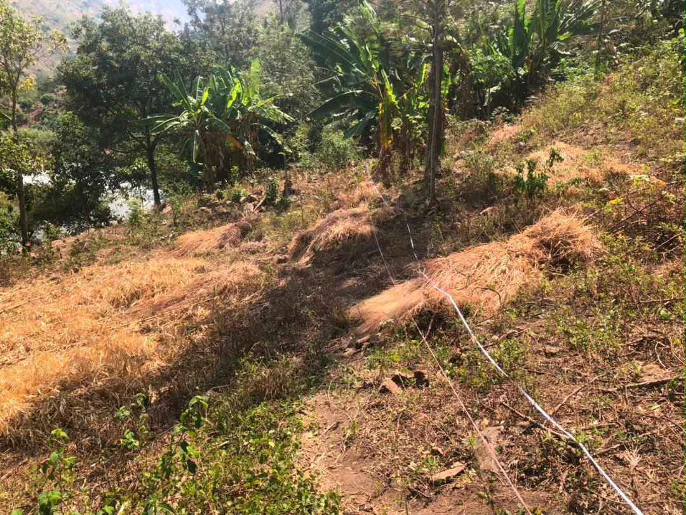
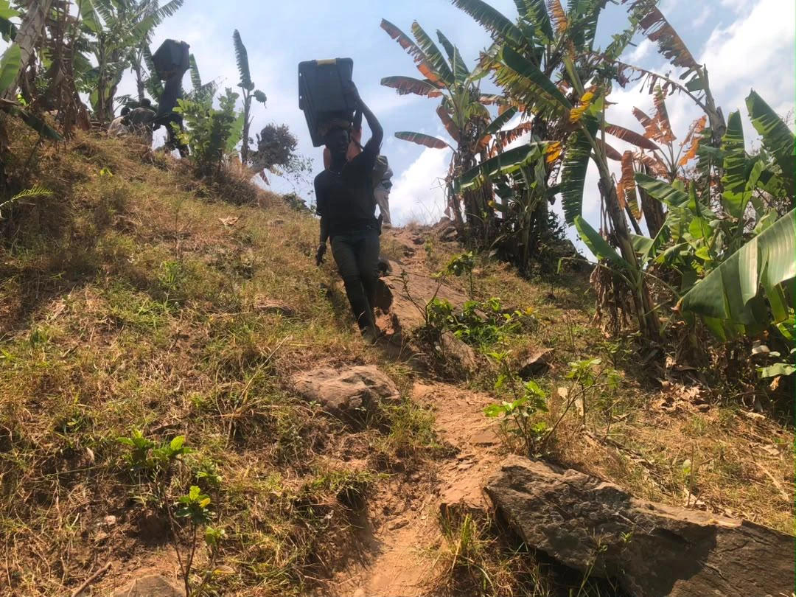
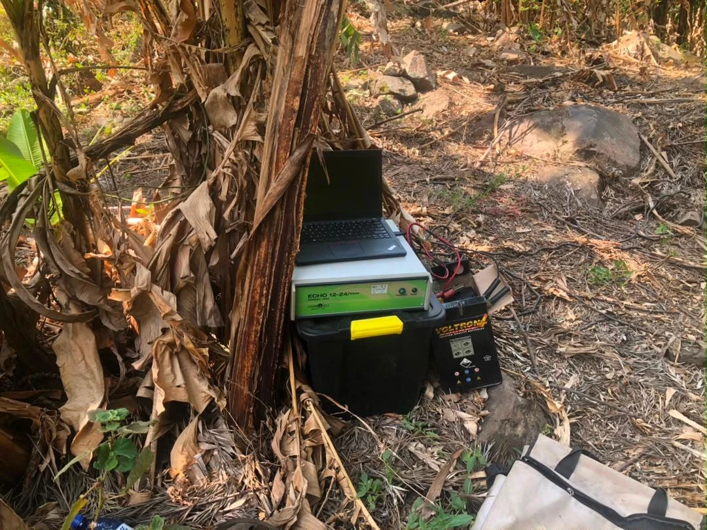

Field note · Rusizi, Rwanda
Reading the ground.
From the surface.
A combined SRT + MASW investigation in the varied terrain of the western branch of the East African Rift.

A velocity contrast is the beginning of an interpretation.
In weathered and fractured terrain, the question is more useful than a single “depth to rock” number: how does the material change, where does stiffness increase, and where is more investigation needed?
The Rusizi investigation brings together measurements that respond differently to the same ground. Comparing them helps distinguish a plausible geological interpretation from one that still needs borehole or field confirmation.

